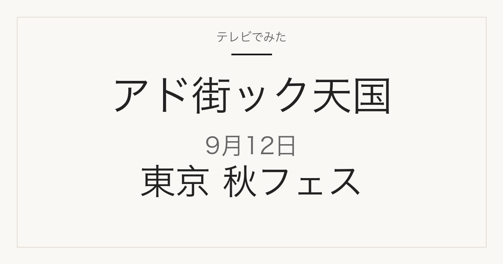

この記事には広告・アフィリエイトリンクが含まれる場合があります。
2026年9月12日（土）放送
出没！アド街ック天国
東京 秋フェスが楽しい街
都内の個性的な秋フェスを歴史・来場者数・話題性でランキング
これは放送前の記事です。番組公式の予告で確認できた内容と、予告に出てくるイベントの公式情報で確認できた開催日・会場をまとめています。順位と個別の店・商品は、放送前の時点では分かりません。放送後に確認できたものを追記します。
イベントの開催日と会場を見る
予告で登場予定
秋フェスの開催日と会場
順位は未発表
番組公式の予告に出てくるイベントのうち、公式サイトで開催日と会場を確認できたものです。番組での順位や紹介の詳細は放送で発表されます。
| イベント | 開催日 | 会場 | 公式 |
|---|---|---|---|
| 妖怪盆踊り2026 | 2026年10月10日(土)・11日(日)・12日(月・祝) | GREEN SPRINGS 2F 中央広場（東京都立川市） | 公式サイト |
| 下北沢カレーフェスティバル2026 | 2026年10月8日(木)〜10月25日(日) | 下北沢エリア（135店舗が参加） | 公式サイト |
| ふくろ祭り | 2026年9月26日(土)・27日(日)／踊りの祭典 10月10日(土)・11日(日) | 池袋西口駅前広場ほか（雨天決行） | 公式サイト |
| フィエスタ・デ・エスパーニャ2026 | 2026年11月14日(土)・15日(日) | 代々木公園イベント広場 | 公式サイト |
開催日・会場は各イベントの公式サイト（2026年9月12日確認）によります。内容は変更になる場合があるため、おでかけ前に公式サイトでご確認ください。
予告で名前が挙がっているもの
開催日を確認中のイベント
- 六本木アートナイト— 六本木エリアの夜通しのアートイベントです。公式サイトの開催日表示が当方の取得方法では読み取れなかったため、日程は記載していません。公式サイトでご確認ください。
- 代々木公園のナイトマーケット・インド系のイベント— 予告で名前が挙がっていますが、開催日を公式情報で特定できていないため記載していません。
日付を確認できたものだけを上の表に載せています。
放送後は、このページで順位を確認できます
放送後、このページに次の情報が加わります。ブックマークしておけば、同じURLのまま最新の内容を見られます。
- 番組で発表された順位
- 番組で紹介される店の名前と場所
- 番組で示される料理名と価格
掲載するのは、番組公式か店舗・主催者の公式情報で確認できたものだけです。イベント会場の周辺にある飲食店を、番組が取り上げた店として書くことはしません。
関連記事
出典
テレビ東京「出没！アド街ック天国」番組公式（次回予告）
当サイトは番組公式サイトではありません。放送内容は変更になる場合があります。